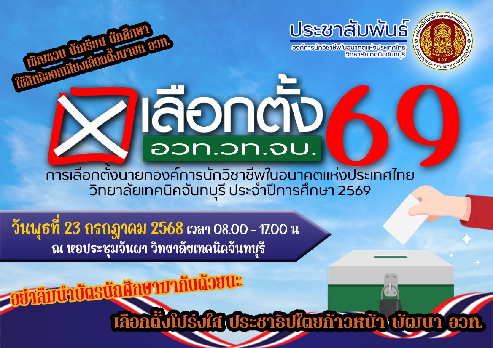
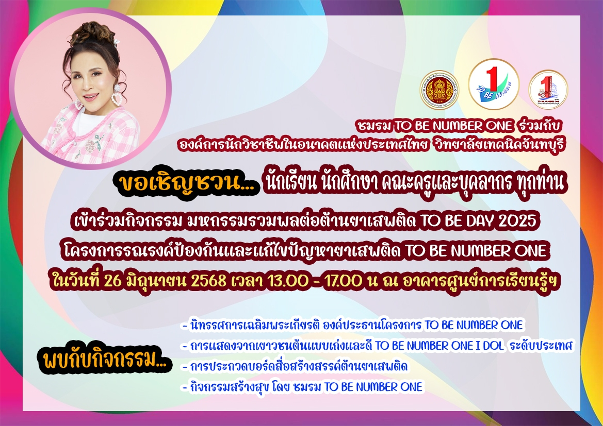
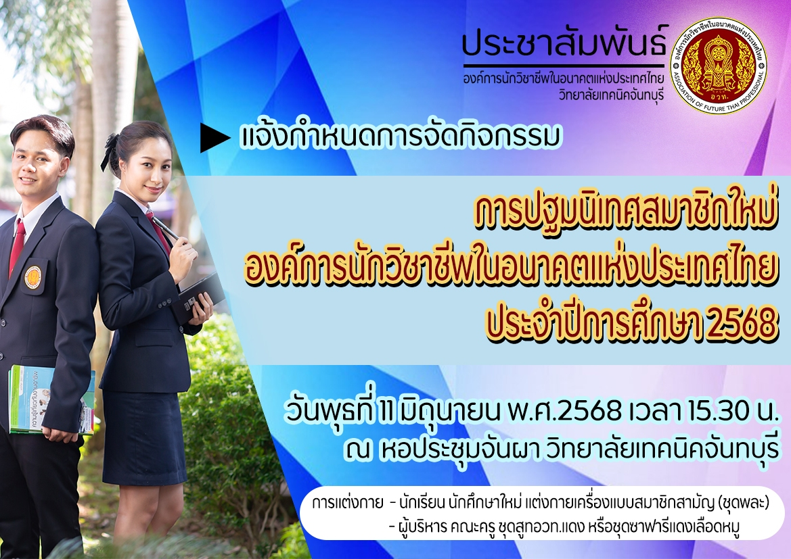
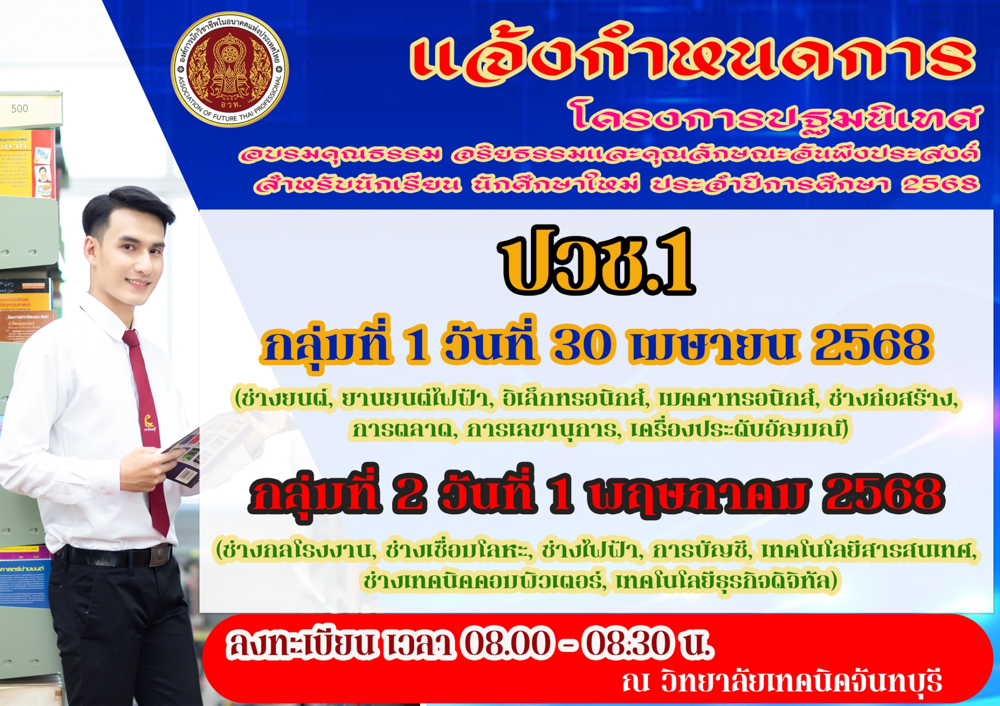
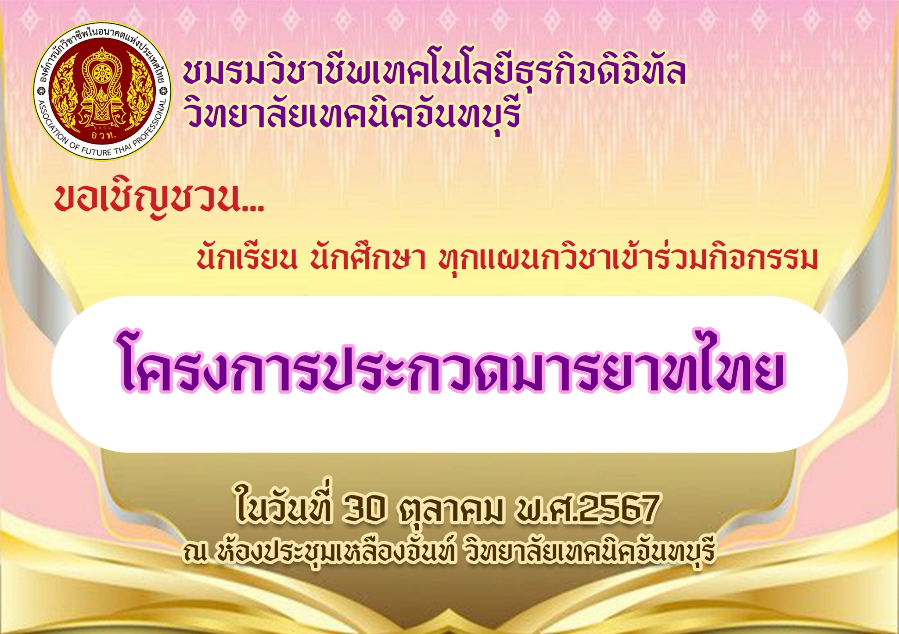

แจ้งกำหนดการจัดกิจกรรม
งานประชุมวิชาการองค์การนักวิชาชีพในอนาคตแห่งประเทศไทย
การแข่งขันทักษะวิชาชีพและทักษะพื้นฐาน ระดับจังหวัด
วันที่ 6-7 พฤศจิกายน พ.ศ.2568
แจ้งกำหนดการจัดกิจกรรม
โครงการอบรมเสริมศักยภาพผู้นำ
องค์การนักวิชาชีพในอนาคตแห่งประเทศไทย วิทยลัยเทคนิคจันทบุรี
วันที่ 23 สิงหาคม พ.ศ.2568
แจ้งกำหนดการจัดกิจกรรม
งานประชุมวิชาการองค์การนักวิชาชีพในอนาคตแห่งประเทศไทย
การแข่งขันทักษะวิชาชีพและทักษะพื้นฐาน ระดับสถานศึกษา
ประจำปีการศึกษา 2568
วันที่ 22 สิงหาคม พ.ศ.2568
แจ้งกำหนดการจัดกิจกรรม
การแข่งขันทักษะวิชาชีพและทักษะพื้นฐาน ระดับสถานศึกษา
ประจำปีการศึกษา 2568
วันที่ 22 สิงหาคม พ.ศ.2568
ขอเชิญชวน นักเรียน นักศึกษา สมัครเข้าร่วมการประกวดและเข้าร่วมกิจกรรม
การประกวดสิ่งประดิษฐ์จากของเหลือใช้
ประจำปีการศึกษา 2568
วันที่ 20 สิงหาคม พ.ศ.2568
ขอเชิญชวน นักเรียน นักศึกษา วิทยลัยเทคนิคจันทบุรี เข้าร่วมกิจกรรม
โครงการส่งเสริมสัปดาห์วันวิทยาศาสตร์
ประจำปีการศึกษา 2568
วันที่ 20 สิงหาคม พ.ศ.2568
ขอเชิญชวน นักเรียน ระดับชั้น ปวช.2 และ ปวช.3 (ยกเว้นฝีกงาน) เข้าร่วมกิจกรรม
โครงการอบรมคุณธรรม จริยธรรม สำหรับนักเรียน ปวช.2 และ ปวช.3
วันที่ 6 สิงหาคม พ.ศ.2568
กิจกรรมสร้างภาพลักษณ์อาชีวศีกษา
โครงการ "อวท.จิตอาสา"
วันที่ 25 กรกฎาคม พ.ศ.2568
เชิญชวน นักเรียน นักศึกษา ใช้สิทธิออกเสียงเลือกตั้งนายก อวท.
การเลือกตั้งนายกองค์การนักวิชาชีพในอนาคตแห่งประเทศไทย
วิทยลัยเทคนิคจันทบุรี ประจำปีการศึกษา 2568
วันที่ 23 กรกฎาคม พ.ศ.2568

ขอเชิญชวน นักเรียน นักศึกษา เข้าร่วมกิจกรรม และ ร่วมบริจาคเทียน และหลอดไฟฟ้า
ในโครงการวันอาสฬหบูชา และ วันเข้าพรรษา
วันที่ 4 กรกฎาคม พ.ศ.2568
แจ้งกำหนดจัดกิจกรรม และ ขอเชิญชวน นักเรียน นักศึกษา เข้าร่วมกิจกรรม
โครงการอบรมเสริมสร้างความรู้ด้านภูมิปัญญาท้องถิ่นจากผู้เชี่ยวชาญ
วันที่ 4 กรกฎาคม พ.ศ.2568
แจ้งกำหนดจัดกิจกรรม
โครงการแข่งขันทักษะวิชาชีพการเลขานุการ
วันที่ 2 กรกฎาคม พ.ศ.2568
แจ้งกำหนดการจัดกิจกรรม และ เชิญชวน นักเรียน นักศึกษา เข้าร่วมกิจกรรม
โครงการพัฒนาส่งเสริมความรู้ความสามารถ ทางด้านเทคโนโลยี สื่อสารสนเทศและดิจิทัล
วันที่ 30 มิถุนายน พ.ศ.2568
ขอเชิญชวน นักเรียน นักศึกษา เข้าร่วมกิจกรรม
โครงการส่งเสริมความรู้ด้านคณิตศาสตร์
วันที่ 30 มิถุนายน พ.ศ.2568
ขอเชิญชวน นักเรียน นักศึกษา คณะครูและบุคลากร ทุกท่าน เข้าร่วมกิจกรรม
โครงการรณรงค์ป้องกันและแก้ไขปัญหายาเสพติด TO BE NUMBER ONE
วันที่ 26 มิถุนายน พ.ศ.2568

แจ้งกำหนดจัดกิจกรรม
การปฐมนิเทศสมาชิกใหม่องค์การนักวิชาชีพในอนาคตแห่งประเทศไทย
ประจำปีการศึกษา 2568
วันที่ 11 มิถุนายน พ.ศ.2568

ขอเชิญชวนสมาชิกชมรมวิชาชีพทุกคนเข้าร่วมกิจกรรม
โครงการร่วมใจรักษ์พิทักษ์ความสะอาด
วันที่ 6 มิถุนายน พ.ศ.2568
ขอเชิญชวน นักเรียน นักศึกษา เข้าร่วมกิจกรรม
โครงการศึกษาธรรมชาติ และปลูกป่าทดแทน
วันที่ 30 พฤษภาคม พ.ศ.2568
ประชาสัมพันธ์การจัดกิจกรรม
โครงการอนุรักษ์พันธุกรรมพืชอันเนื่องมาจากพระราชดำริ
วันที่ 23 พฤษภาคม พ.ศ.2568
แจ้งกำหนดการ
โครงการปฐมนิเทศ อบรมคุณธรรม จริยธรรมและคุณลักษณะอันพึงประสงค์
สำหรับนักเรียน นักศึกษาใหม่ ประจำปีการศึกษา 2568
วันที่ 2 พฤษภาคม พ.ศ.2568
แจ้งกำหนดการ
โครงการปฐมนิเทศ อบรมคุณธรรม จริยธรรมและคุณลักษณะอันพึงประสงค์
สำหรับนักเรียน นักศึกษาใหม่ ประจำปีการศึกษา 2568
กลุ่มที่1 วันที่ 30 เมษายน พ.ศ.2568
กลุ่มที่2 วันที่ 1 พฤษภาคม พ.ศ.2568

แจ้งกำหนดการจัดกิจกรรม และเชิญชวนนักเรียน นักศึกษา เข้าร่วมกิจกรรม
โครงการมหกรรมจัดแสดงนวัตกรรมสิ่งประดิษฐ์ของนักเรียน นักศึกษา
วิทยลัยเทคนิคจันทบุรี ประจำปีการศึกษา 2567
วันที่ 29 มกราคม พ.ศ.2568
ขอเชิญชวน นักเรียน นักศึกษา เข้าร่วมกิจกรรม
การแข่งขันกีฬาภายในวิทยาลัยเทคนิคจันทบุรี
ประจำปีการศึกษา 2567
วันที่ 22 - 24 มกราคม พ.ศ.2568
แจ้งกำหนดการจัดกิจกรรม
โครงการส่งเสริมการเป็นผู้ประกอบการจากผลผลิตพื้นเมืองจันทบุรี
วันที่ 20 มกราคม พ.ศ.2568
แจ้งกำหนดการจัดกิจกรรม และเชิญชวนนักเรียน นักศึกษา เข้าร่วมกิจกรรม
เสริมสร้างวินัยความปลอดภัยในการทำงาน (Safety-First)
ประจำปีการศึกษา 2567
วันที่ 10 มกราคม พ.ศ.2568
แจ้งกำหนดการจัดกิจกรรมขอเชิญชวนสมาชิกชมรมวิชาชีพทุกคนเข้าร่วมกิจกรรม
โครงการส่งเสริมมาตรฐานวิชาชีพการเลขานุการ
วันที่ 27 พฤศจิกายน พ.ศ.2567
แจ้งกำหนดการจัดกิจกรรม
โครงการส่งเสริมการพัฒนาผลิตภัณฑ์ชุมชน(เสื่อจันทบู)
วันที่ 13 พฤศจิกายน พ.ศ.2567
ขอเชิญชวน นักเรียน นักศึกษา ทุกแผนกวิชาเข้าร่วมกิจกรรม
โครงการประกวดมารยาทไทย
วันที่ 30 ตุลาคม พ.ศ.2567
